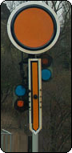
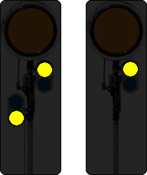
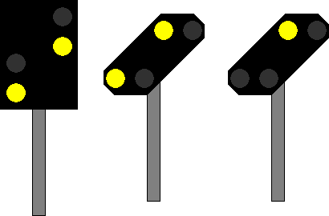

(1)
Bedeutung
Halt erwarten.
Signalbuch-Online • Vr-Signale
Vorsignal zur Ankündigung von Halt an einem nachfolgenden Hauptsignal.
Halt erwarten.
Tageszeichen:
Die runde Scheibe steht senkrecht. Wo ein Flügel vorhanden ist, zeigt er senkrecht nach unten.

Nachtzeichen:
Zwei gelbe Lichter nach rechts steigend.
An Vorsignalen im Geltungsbereich der DV 301, die nicht an Hauptsignalen stehen, kann bis auf Weiteres nur ein gelbes Licht gezeigt werden.

Zwei gelbe Lichter nach rechts steigend.
An Vorsignalen im Geltungsbereich der DV 301, die nicht an Hauptsignale stehen, kann bis auf Weiteres nur ein gelbes Licht gezeigt werden.
